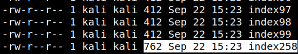
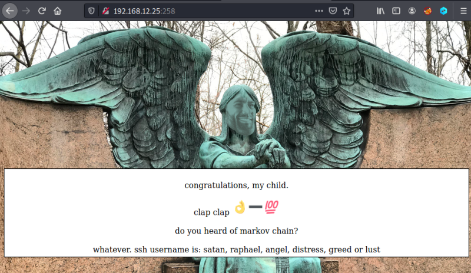

3.1 Port fuzzing
You don't know whether there is any different port than the previous ones where there were another webpage or not. So, let's fuzz the ports.
The following commands have to be run on your Kali Machine.
1. Use “wget” to filter all ports. This command downloads “index” files on all ports and adds a suffix with their matching port.
$for i in {23..600}; do wget 192.168.12.25:$i -O index$i; done
2. List and order all the “index” files.
$ls index* -la | sort
Output:

The biggest “index” file is
index258, so, this one has to be different.3. Go to your browser an visit the http://192.168.12.25:258/ page.
